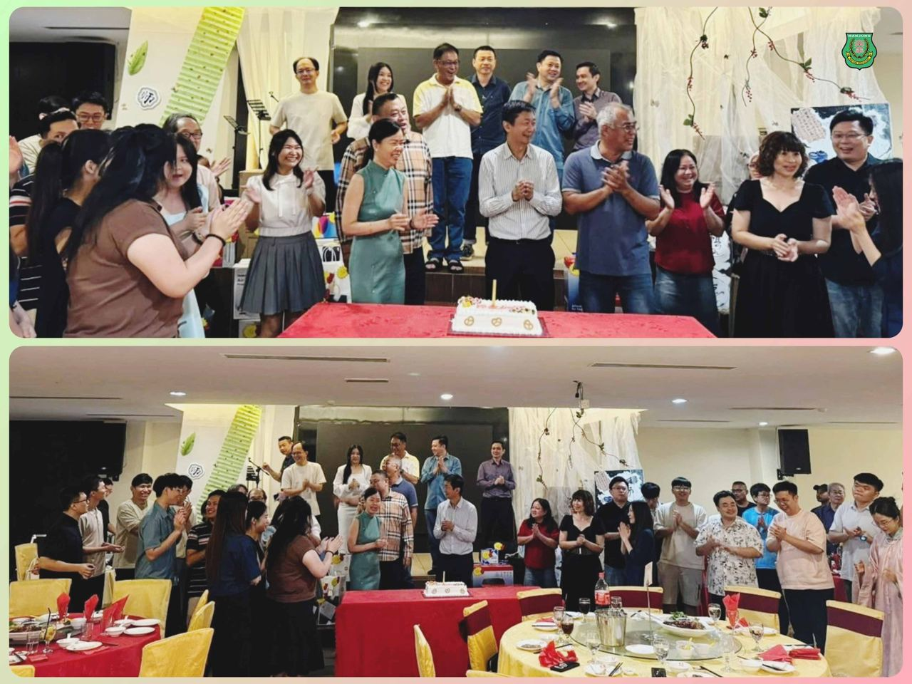
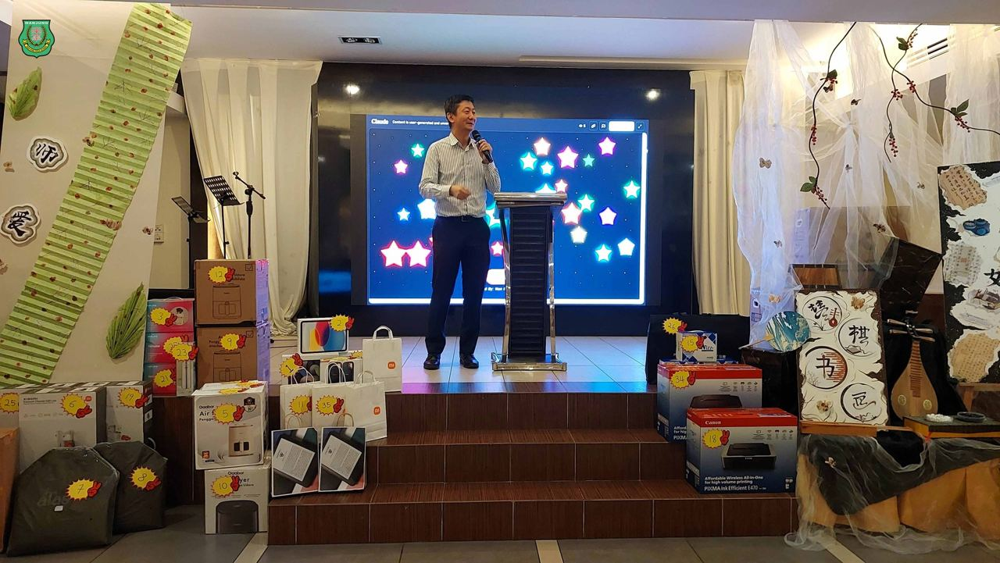
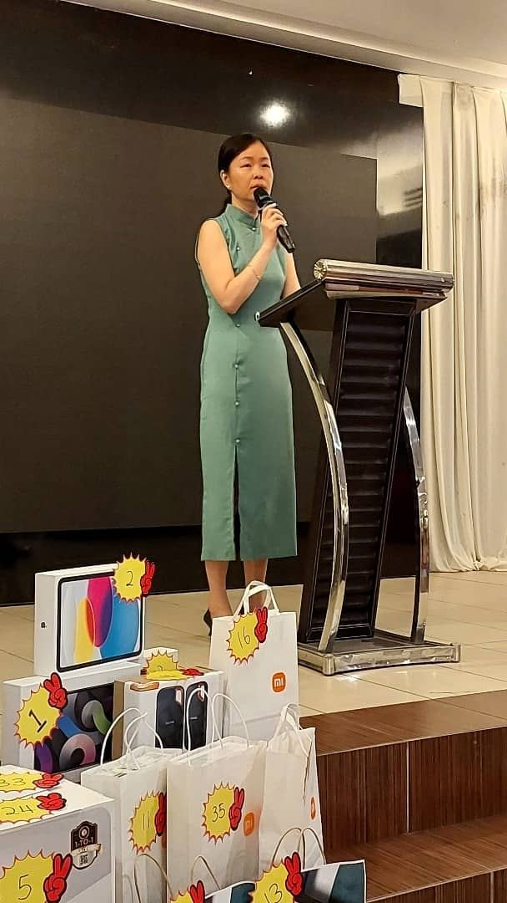
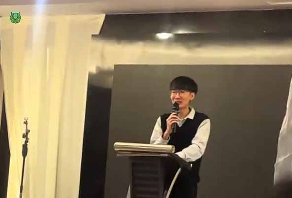
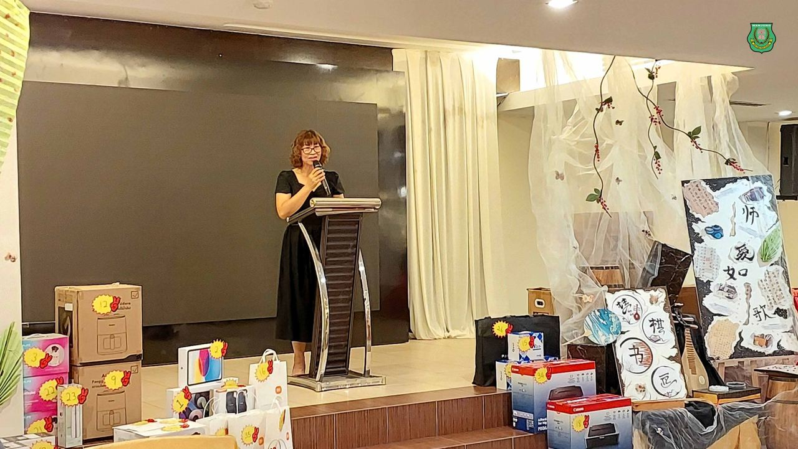
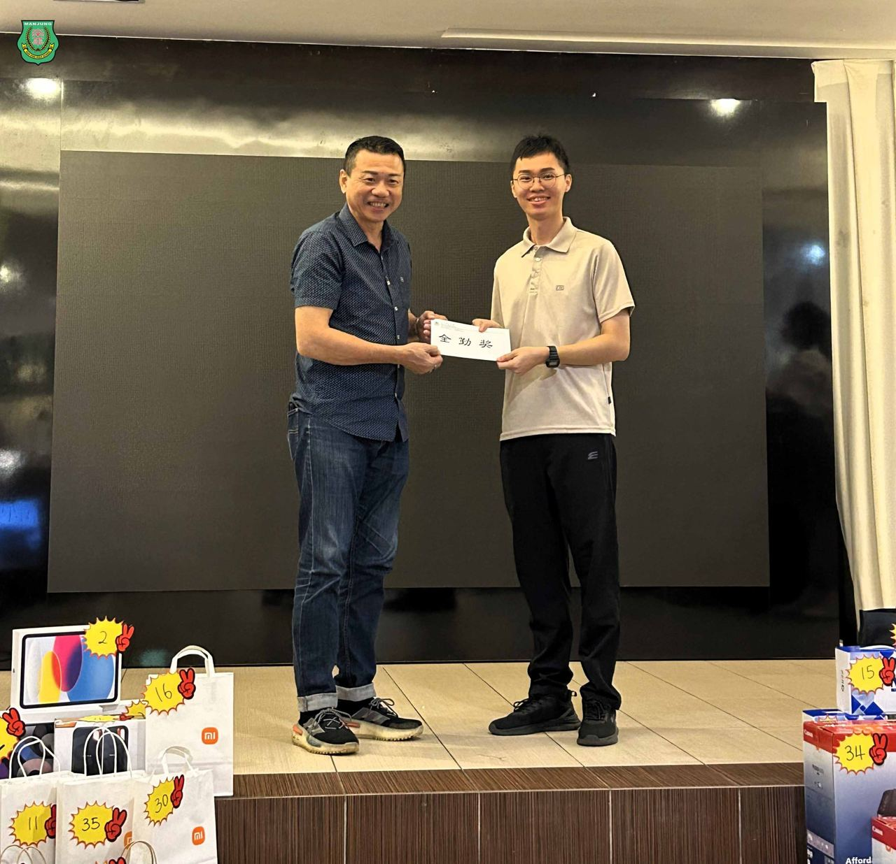
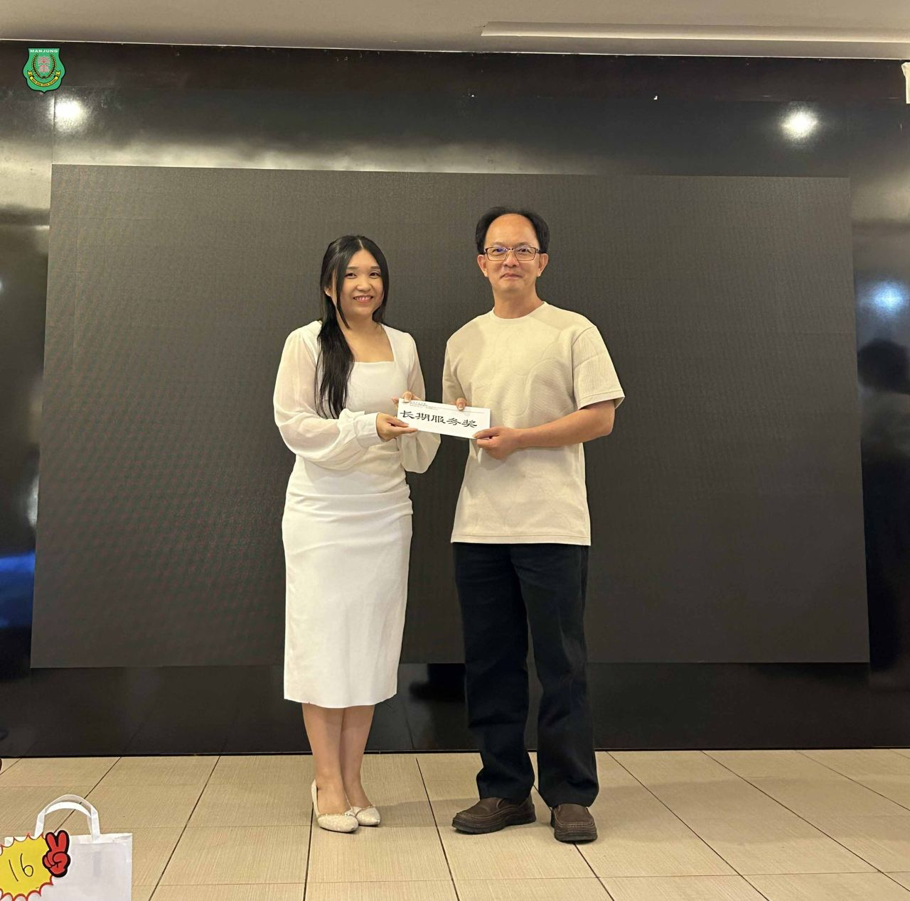
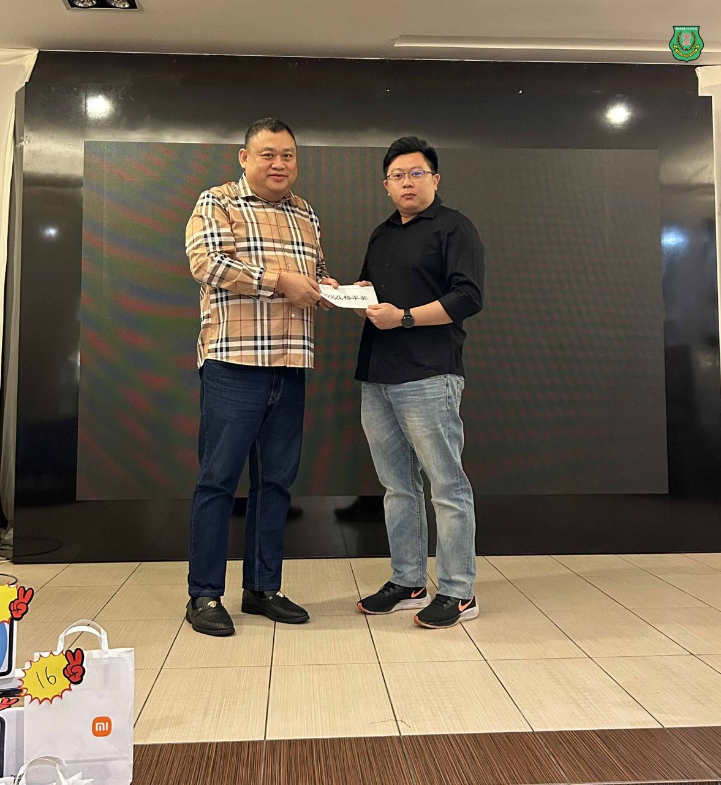

南华独中2025年教师节晚宴
南华独中2025年教师节晚宴
师爱如歌，绕梁不绝
南华独中于日前为教师们举办了一场庄重不失温馨的教师节晚宴。本届以“#师爱如歌”为题，今夜，老师们是最美的旋律，他们的心血与深情，谱写成一首首无声却动人的乐章。
#厚积薄发，#校风蔚然
董事长颜登逸先生在致辞中，满怀欣喜地说，这是他十四年来最开心的一年，并表示以“厚积薄发”四字形容当下的本校最为贴切。学校经过长期积累与沉潜，如今正是展现丰硕成果的时刻。颜董事长动情地分享：近来许多外宾到访学校，对本校学生留下了极为深刻的印象——他们懂得主动问好，待人有礼，气质中流露出自信与教养。这份改变，正源于学校积极推动教育改革，引入校本与选修课程，让学生在多元学习中重拾自信，精神面貌焕然一新。
“南华的办学特色，不是单一的成绩导向，而是透过多姿多彩的活动，发掘天赋，培养热诚，让孩子们具备解决问题的能力。”他强调，今日的校风逐渐成型，背后是全体教师的引导与关怀。校内食堂的大厨张碧云，也摇身一变成为“小厨师”选修课的导师，印证了“人人皆可为师”的理念——只要心怀热爱，皆能成为孩子们生命中的引路人。
#师者之心，#遇见美好
校长陈丽冰博士致辞中引用《春晖》中良师形象，坦言自己曾未遇过“理想中的老师”，因此才立志成为那样的存在。她说：“真正能让学生成长的，不是挑剔，而是接纳；不是盯着百个缺点，而是看见哪怕一个闪光点。”
陈校长深情地指出，教师的价值，不在于权威性的讲述，而在于用爱的镜子，让孩子看见自己的独特与可能。师爱如歌，或许不是轰烈的交响，而是岁月里恒久的长音，静静回应着孩子最需要的时刻。“教育不仅是知识的传递，更是灵魂的相遇。”陈校长说，正因这份“最美的遇见”，南华校园才如此温暖，教育才如此动人心弦。
桃李天下，春晖四方
家长联谊会主席叶燕妮女士，则以家长的身份，表达了对老师们的由衷感恩。她说，教师的辛勤付出，不仅点亮了学生的未来，也照亮了家庭的希望。教师联谊会主席柯家浚老师亦向同仁送上祝福，他以“桃李满天下，春晖遍四方”寄语，感念教师们无私的付出：“你们用粉笔写下的，不只是知识，而是孩子们的未来。”
#荣光与爱，#时刻随行
当晚的切蛋糕仪式与颁奖环节，将气氛推向温馨的高潮。全勤奖、长期服务奖、百分百及格率奖等一一颁发，不仅是对教师们耕耘的嘉许，更是校园文化的见证：
【全勤奖】
杨秀珍师、叶佳盛师、李佳城师、黄俊锦师、李国良师、胡楎晖师、黄鹙葭师、雷丰侥师。
【长期服务奖】
林祥烟（41年8月）、陈明芬（38年5月）、郑国强师（35年8月）、CIKGU MOHAMMAD SHAHRIL（10年6月）、杨秀珍师（10年5月）。
【100%及格率奖】
杨秀珍 （SPM 华文）
黄鹙葭 （统考高中美术）
陈明芬 （统考高中华文-高三理）
柯家浚 （统考初中数学-初三忠）
刘瑞龙 （统考初中科学-初三忠）
在笑语与掌声中，抽奖环节更添喜悦。特别值得一提的是，今年的幸运抽奖系统由南华独中“AI教学与应用部门”设计，以科技为宴会注入了别样的趣味。







